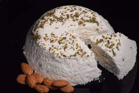

Hummus de garbanzos
Ingredientes
- 1 taza de garbanzos cocidos (puede ser una lata)
- 4 dientes de ajo grandes o 6 pequeños
- 2 cdas. de tahini
- 3 cdas. de jugo de limón
- 3 cdas. de agua
- 1 cdita. humo sólido en polvo
- Aceite de oliva
- Sal y pimienta
- Pimentón
Elaboración
- Para comenzar con la receta vamos a poner en una asadera para horno los ajos, con cáscara. Pincharlos para que no exploten. Asarlos a fuego medio por unos 15-20 min.
- Luego de pelar los ajos, habrá quedado una pasta. Si alguna parte del interior se quemó, lo que es común, sacarla. Que quede solo la pasta de ajos sin partes quemadas para no agregar sabores indeseados.
- Poner en el vaso de la procesadora o mini pimmer todos los ingredientes menos el agua: garbanzos, ajos, jugo de limón, tahini, humo sólido, sal y pimienta. Triturar. Ir agregando el agua. El tradicional debe quedar como una pasta suave, pero recuerden que esto es a gusto y pueden lograr un humus con la consistencia que prefieran.
- En el caso de que queramos un hummus ahumado, solo hay que agregar la cantidad de humo sólido o líquido.
- Siempre servir con aceite de oliva y pimentón por encima.
Hamburguesa de Porotos

Ingredientes
- 2 tazas de porotos hervidos
- 1/2 cebolla morada
- 2 dientes de ajo
- 1 cdta. de bicarbonato de sodio
- 1 cda. jugo de limon
- 1/2 taza de harina de avena
- 1/4 taza de agua hirviendo
- condimentos a gusto
Elaboración
- En un recipiente colocar la harina de avena con el agua hirviendo, mezclar y dejar reposar.
- En un bol pisar los porotos con un tenedor o piza papas o tan bien triturar con trituradora hasta que queden machacados (se pueden procesar)
- Al bol agregar condimentos (sal, oregano, pimentos, pimienta humo liquido), la cebolla y el ajo picados chiquitos. El bicarbonato de sodio y el jugo del limon (procura que caiga arriba del bicarbonato para activarlo)
- A la mezcla anterior incorporale con las manos la harina de avena.
- Formar las hamburguesas con la mano o con lo que tengas mas combeniente en tu casa para formarlas y pasarlas por una mezcla de avena y oregano (no necesita ligue).
- Freir, hacer a la plancha o al horno y servir. Se pueden congelar previamente hechas. Duraran hasta 9 meses en el freezer y 4 en el congelador.
Queso de almendras

Ingredientes
- 150 gramos de Harina de almendras
- 4 cucharadas soperas de Zumo de limón
- 3 cucharadas soperas de Aceite de oliva
- 2 dientes de Ajo
- ½ taza de Agua (120 mililitros)
- 1 pizca de Sal
- Pimienta
Elaboración
- Para hacer este deliciosa, lo primero que debes hacer es alistar todos los ingredientes. Ten en cuenta que el ajo puede ser natural o en polvo, lo que prefieras.
- Teniendo esto en cuenta, coloca los ingrediente en la licuadora y tritura todo junto hasta que se forme una masa compacta y homogénea. Tritura las veces que sea necesario hasta que todo se mezcle bien.
- Vacía esta mezcla sobre una tela para quesos o una malla fina. Haz un nudo formando una bola, apretando bien la mezcla. Coloca esta bola sobre un colador con envase debajo y deja en reposo unas 12hs en la nevera.
- Para terminar de hacer el queso de almendras tienes dos opciones. La primera es colocar la malla con el queso en un envase de plástico con agujeros. Añade algo de peso encima para que tome la forma del molde y deja en reposo unas 48 horas más.
- La otra opción de terminar el queso de almendras es más rápida. Precaliente el horno y engrasas con aceite un molde pequeño. Coloca allí el queso y cocina por 40 minutos a temperatura floja.
Salchichas de arroz

Ingredientes
- 1/2 taza de arroz cocido
- 1/2 taza de harina de garbanzo
- 1/2 taza de almidón de yuca
- 1/2 cebolla
- 1 diente de ajo
- 1/2 cucharada de pimentón dulce
- 1/2 cucharada de pimienta negra molida
- pisca de pimenta blanca
- 1/2 cucharada de comino
- 3 cucharadas de jugo de remolacha
Elaboración
- Pica la cebolla y el diente de ajo finamente.
- Pon una sartén al fuego y añade un chorrito de aceite. Cuando esté caliente, incorpora la cebolla y deja pochar unos 5 minutos removiendo de vez en cuando. Agrega el ajo, remueve y cuando empiece a dorarse, añade el arroz cocido. Mezcla y fríe un par de minutos. Retira del fuego y deja enfriar.
- Pasa el arroz frío a un vaso de batidora y tritura. Añade el jugo de remolacha para que sea más sencillo triturarlo.
- En un bol, agrega la mezcla de arroz triturado, el pimentón dulce, el comino y la pimienta negra. Remueve y añade una pizca de sal, el almidón de yuca y la harina de garbanzos. Mezcla hasta obtener una pasta homogénea.
- Extiende un trozo rectangular de papel film y coloca una porción de la masa en el centro. Envuelve con el papel y dale la forma alargada de la salchicha. Cierra los extremos del papel film con un par de nudos. Repite el proceso hasta acabar con la masa.
- Introduce las salchichas en el congelador y deja reposar mínimo 1 hora.
- Una vez pasado este tiempo, retira el papel film con cuidado de no romperlas. Pon una sartén al fuego con un chorro de aceite y cuando esté caliente, fríe las salchichas.
- Sirve las salchichas de arroz y garbanzos y sorprende a todos con las receta más original.
Chorizos de seitan

Ingredientes
- 1 kg de gluten
- 1/2 vaso de salsa de soja
- 8 cdas soperas de pimentón dulce
- 1,3L de agua
- 1 cda sopera de ajo en polvo
- 8 cdas soperas de arroz blanco hervido (preferentemente redondo)
- 20 cdas soperas de pan rallado
- 2 cdas y media soperas de sal
- 1/2 cda sopera de levadura
Elaboración
- En un bol mezclamos el gluten, el pimentón, las guindillas, la levadura, la sal, el ajo en polvo, el pan rallado. Una vez esté todo bien mezclado, añadimos el arroz poco a poco, distribuyéndolo por todo el bol.
- Añadimos el agua y la salsa de soja al bol, y mezclamos de nuevo con las manos.
- olocamos una base de papel de film, y seguidamente, mojándonos las manos con agua para que no se nos quede pegado, agarramos un trozo alargado de la masa, y presionándolo y dándole forma de cilindro muy alargado, lo colocamos encima del papel de film, dejando una palma de espacio sobrante por cada esquina del chorizo. Ya colocado, lo enroscamos y apretamos dentro del papel de film.
- Habiendo quedado el chorizo vegano envuelto en papel de film, sobrando papel a ambos lados del chorizo, atamos cada 5 cm de chorizo con hilo, atando también el principio y el fin.
- Repetimos el proceso hasta acabar con toda la masa, y agujereamos levemente cada chorizo con un mondadientes o un tenedor, porque sino podría explotar.
- Llenamos una olla con agua suficiente para cubrir todos los chorizos veganos, encendemos el fuego, lo llevamos a ebullición y los dejamos una media hora y retiramos.
Sushi vegano
Ingredientes
- 1 Taza arroz para Sushi
- 3 Cucharadas Vinagre de Arroz
- Sal al gusto
- Algas Nori para sushi
- 1/2 Pimiento rojo cortado en tiritas
- 1 Calabacín pequeño cortado en bastoncitos
- 1 Zanahoria cortada en bastoncitos
- 1 bulbo de Remolacha cortada en bastoncitos
- 1 palta cortada en medias lunas al que se le rocía con jugo de limón para que no se ponga negro
- Semillas de Sésamo negras y blancas
- Salsa de Soja o Salsa Tamari
- Salsa Wasabi
Elaboración
- Hervir el arroz en dos tazas de agua por 20 minutos o hasta que esté tierno. Dejarlo enfriar completamente. Mientras se enfría cortamos las verduras.
- Aderezar el arroz con el azúcar, vinagre de arroz y la sal y mezclar muy bien
- Armamos el sushi: Colocamos en una esterilla para hacer sushi una capa de papel film y sobre ponemos una lámina de alga nori y sobre ella colocamos arroz, dejando como un cm de alga sin arroz.
- Sobre el arroz y lo más cercano a la base, vamos colocando las verduras unas sobre otras, finalmente ponemos el aguacate y comenzamos a enrollar despacio, pero con firmeza y. ayudándonos de la esterilla.
- Hacemos todos los que queramos, o hasta que se nos acaban los ingredientes. Después mojamos un cuchillo, que corte bien, en agua y cortamos cada rollo en 4 pedazos iguales y los servimos con las salsas.
- Armar el sushi, pero esta v vez con el alga por dentro del arroz y para ello extendemos semillas de sésamo sobre la esterilla cubierta con film, a continuación, ponemos el arroz, lo extendemos bien y sobre el arroz ponemos ½ lámina de alga nori. Colocamos los vegetales como en el caso anterior y procedemos a enrollar, una vez formados los rollos, los cortamos y servimos.